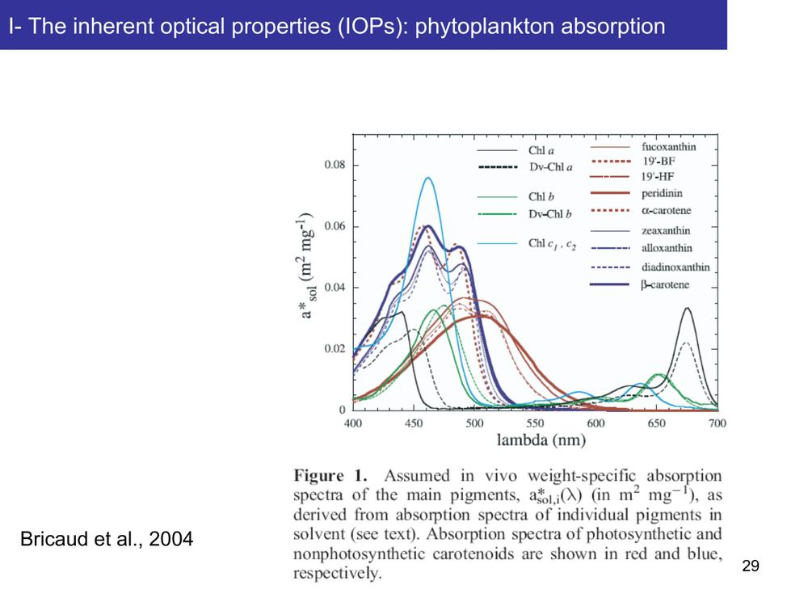
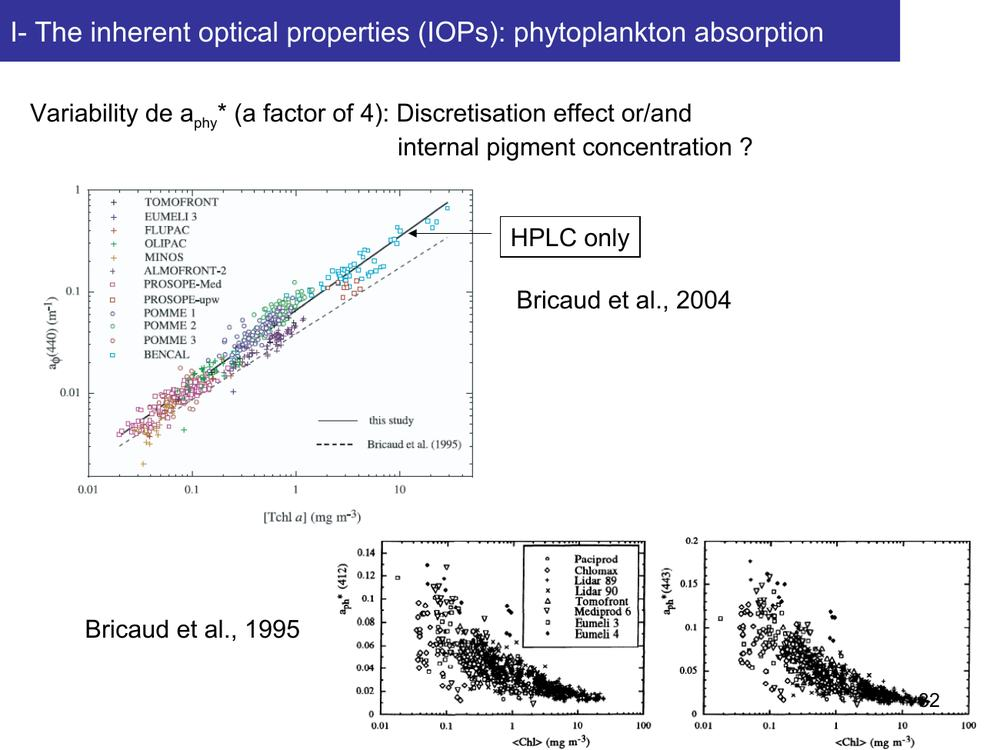
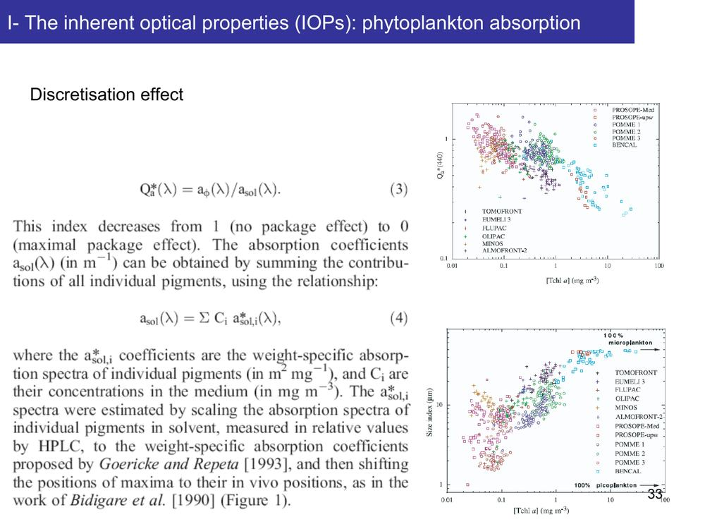
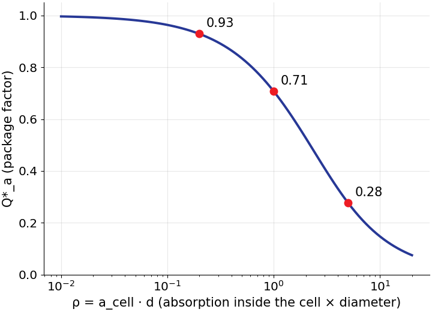
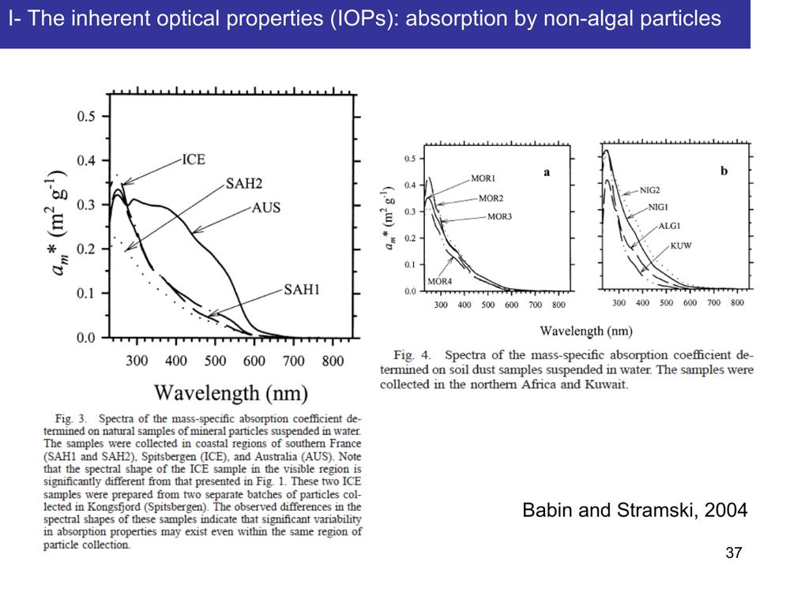
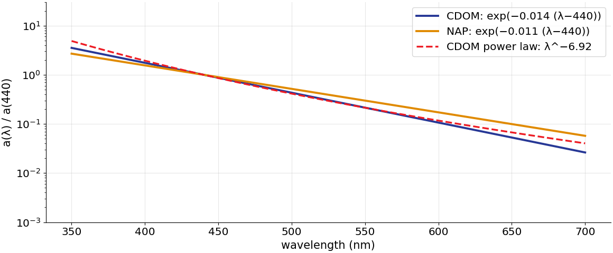

C · Absorption
Phytoplankton, non-algal particles, CDOM and a_cdm (slides 28–45)
Phytoplankton pigments

Lecture slide 29 (Bricaud et al., 2004)
- Chl a: 443 and 675 nm
- Carotenoids: 450–500 nm
- Chl c: 465 and 635 nm
- Phaeopigments
Variability of specific absorption

Lecture slide 32 (Bricaud et al., 1995; 2004)
- a*ph varies by ≈ ×4
- Falls as Chl increases
- Package effect or pigment content?
Package effect, symbol by symbol
The package effect

Lecture slide 33
- Absorption in cells ÷ in solution
- 1 = no packaging
- → 0 = maximal packaging
- Cells larger at high Chl
Package factor of a sphere

Own computation: Q*a versus ρ = (intracellular absorption) × (diameter); verified by two methods
Non-algal particles

Lecture slide 37 (Babin & Stramski, 2004)
- Exponential increase to the blue
- S ≈ 0.011 nm⁻¹ (slide 35)
- Iron content raises UV–blue absorption (slide 38)
CDOM absorption model

Lecture slide 41
- Exponential decay toward the red
- S′ ≈ 0.014 nm⁻¹
- High S′: fulvic (marine)
- Low S′: humic (terrestrial)
Exponential absorption, symbol by symbol
Spectral shapes of CDOM and NAP

Own computation, normalised at 440 nm: exponential laws S = 0.014 and 0.011 nm⁻¹ and the λ−6.92 alternative
Absorption budget in two water types

Lecture slide 45
- Case 1: minimum in the blue
- Case 2: ×10 larger scale
- Case 2 minimum near 570 nm
- Water + Chl + CDOM + NAP
Key points
- Chl a peaks 443 and 675 nm
- Package effect: Q*a from 1 to 0
- CDOM S′ = 0.014; NAP S = 0.011 nm⁻¹
- acdm = acdom + anap, ≈ 90 % CDOM